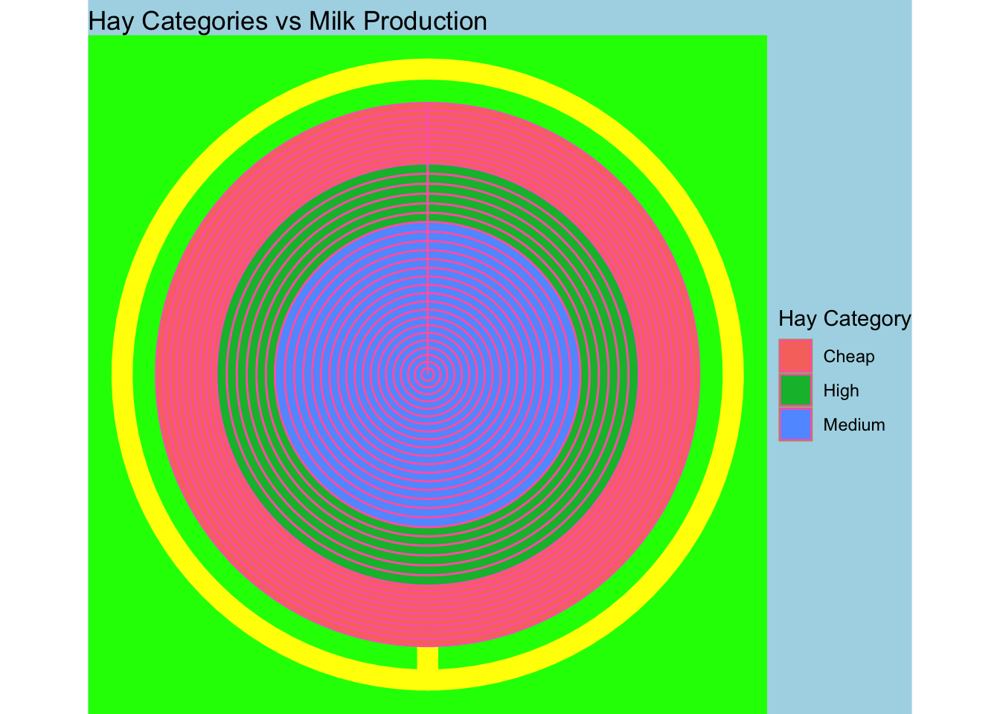
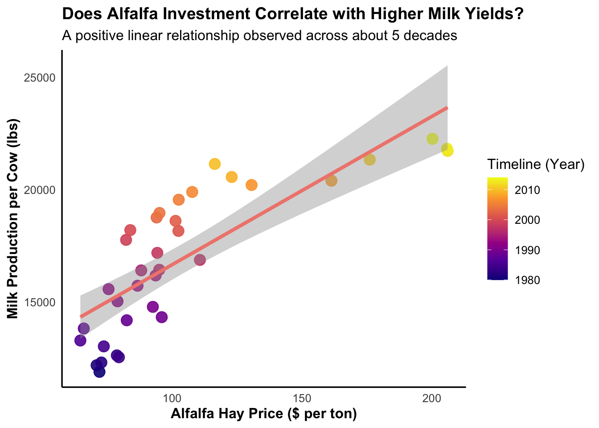

show code
#load libraries - no need to load dplyr and ggplot bc already included in tidyverse
library(tidyverse)
library(ggrepel)
library(here)
library(tidyr)
library(readr)
library(lubridate)In this report, we will use the milkcow_facts dataframe compiled from the United States Department of Agriculture historical data. This data looks at the dairy production of cows across the US herds from 1970 to 2017.
The main question for this report is to explore whether obtaining or purchasing more alfalfa hay would be productive in producing more milk per cows.
The objectives for this report are to: 1. create a bad plot 2. create a good plot
#load libraries - no need to load dplyr and ggplot bc already included in tidyverse
library(tidyverse)
library(ggrepel)
library(here)
library(tidyr)
library(readr)
library(lubridate)#import dataset
#download the dataset from github
milk <- read_csv(here("good_bad_plot", "data", "milkcow_facts.csv"))
glimpse(milk)Rows: 35
Columns: 11
$ year <dbl> 1980, 1981, 1982, 1983, 1984, 1985, 1986…
$ avg_milk_cow_number <dbl> 10799000, 10898000, 11011000, 11059000, …
$ milk_per_cow <dbl> 11891, 12183, 12306, 12622, 12541, 13024…
$ milk_production_lbs <dbl> 1.28406e+11, 1.32770e+11, 1.35505e+11, 1…
$ avg_price_milk <dbl> 0.130, 0.138, 0.136, 0.136, 0.135, 0.127…
$ dairy_ration <dbl> 0.04837357, 0.05035243, 0.04422102, 0.05…
$ milk_feed_price_ratio <dbl> 2.717149, 2.759031, 3.088127, 2.609620, …
$ milk_cow_cost_per_animal <dbl> 1190, 1200, 1110, 1030, 895, 860, 820, 9…
$ milk_volume_to_buy_cow_in_lbs <dbl> 9153.846, 8695.652, 8161.765, 7573.529, …
$ alfalfa_hay_price <dbl> 72.00000, 70.90000, 72.73333, 78.70000, …
$ slaughter_cow_price <dbl> 0.4573000, 0.4193000, 0.3996000, 0.39350…Tip: Do not do this. These are all bad practices set up to make a horrible plot.
#horrible data preparation
#mutate: creating a new hay column into three distinct categories.
#if_else: this is nested within the if_else function because we are looking at three different categories.
bad_milk <- milk |>
mutate(hay_category = if_else(alfalfa_hay_price < 80,
"Cheap",
if_else(alfalfa_hay_price >= 80
& alfalfa_hay_price < 130,
"Medium", "High")))
#plot this bad milk
ggplot(bad_milk, aes(x = "",
y = milk_per_cow,
fill = hay_category)) +
geom_bar(stat = "identity", width = 1,
color = "hotpink") +
coord_polar(theta = "x") +
theme_void()+
theme(panel.background = element_rect
(fill = "green", color = "purple"),
plot.background = element_rect
(fill = "lightblue"),
panel.grid.major = element_line(color = "yellow", linewidth = 5)) +
labs( title = "Hay Categories vs Milk Production",
fill = "Hay Category")
#save plot
ggsave(here("good_bad_plot","output","badplot.png"),width = 8, height = 5)
Figure 1 demonstrates various violations for plotting. Some of the most obvious ones are:
#clean dataset
good_milk <- milk |>
#filter to only look at alfalfa price and milk production
filter(!is.na(alfalfa_hay_price),
!is.na(milk_per_cow)) |>
#plot this good milk
ggplot(aes(x = alfalfa_hay_price,
y = milk_per_cow)) +
#scatter plot to make correlation
geom_point(mapping = aes(color = year), size = 4,
alpha = 0.9) +
#adding smooth line
geom_smooth(method = "lm", color = "#f0877d",
se = TRUE, linewidth = 1.4) +
scale_color_viridis_c(option = "plasma",
name = "Timeline (Year)") +
theme_minimal(base_size = 12) +
labs (title = "Does Alfalfa Investment Correlate with Higher Milk Yields?",
subtitle = "A positive linear relationship observed across about 5 decades",
x = "Alfalfa Hay Price ($ per ton)",
y = "Milk Production per Cow (lbs)") +
theme(plot.title = element_text(face = "bold",
size = 14),
axis.text.x = element_text(face = "plain"),
axis.text.y = element_text(face = "plain"),
axis.line = element_line(color = "black",
linewidth = 0.6),
axis.title.x = element_text(face = "bold"),
axis.title.y = element_text(face = "bold"),
panel.grid.minor = element_blank(),
panel.grid.major = element_blank())
#view plot
good_milk
ggsave(here("good_bad_plot", "output", "goodplot.png"), width = 8, height = 5)
Figure 2 demonstrates good practices for plotting: